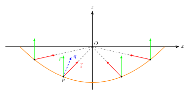
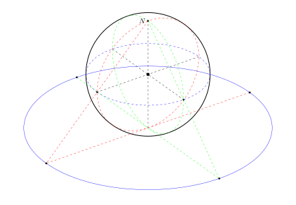

双抛物面映射与球极投影等价
双抛物面映射
在三维图形渲染中，经常需要用到球面数据。球面数据最常用的表示形式是cubemap。为了捕获cubemap，需要为它的每个面都渲染一遍场景，draw call数量将会暴增。有没有一种方法可以只用2个draw call就捕获球面呢？
最简单的想法，对于渲染的一个点，算出其相对于捕获相机的方向，将它投射到球面上，直接取球面坐标的(x,y)分量。相当于从遥远的太空中看地球的南北极。这种叫做orthographic（正射投影）。可以想象，在赤道附近的球面与视线接近平行，投影的图像被严重挤压。
双抛物面映射（dual paraboloid mapping，在某些语境下也叫做双曲面映射）是另一个将球面投影到平面的方法，一些主流游戏，如 GTA V 和 巅峰极速 用它作为env mapping捕获的方案。
坐标变换的推导如下：假设有一抛物面，主轴在z轴，焦点在原点，现由焦点向z-半球面的各个方向上发射光线，经过抛物面的反射之后，反射光总是会平行于z轴。各反射光打到xy平面的点就是双抛物面映射的投影点。

球极投影

假设有一个单位球面，球心在原点，北极上有一盏灯，我们希望求出南半球上的一点$(x,y,z)$ 在 $z=-1$ 平面上的投影坐标 $(u,v,-1)$. 根据 $(u,v,-1), (x,y,z), (0,0,1)$ 三点共线，得 $$ \frac{u}{x} = \frac{v}{y} = \frac{2}{1-z} ,$$ 所以$$u = \frac{2x}{1-z}, v = \frac{2y}{1-z};\ \ u,v\in [-2,2].$$ 如果将“成像平面”从$z=-1$挪到$z=0$，则有 $$u = \frac{x}{1-z}, v = \frac{y}{1-z}; \ \ u,v\in [-1,1].$$ 与双抛物面映射完全一致。
Bonus
假设灯的位置不一定在北极，而在z轴上任意位置$(0,0,h)$，“成像平面”仍然在z=0，由 $(u,v,0), (x,y,z), (0,0,h)$三点共线，可得 $$u = \frac{xh}{h-z}, v = \frac{yh}{h-z}, $$ 当 $h\to+\infty$ 时，$u=x, v=y$ 实际上就变成了正射投影。与直观相符。